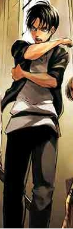

From Wikipedia, the free encyclopedia
Eren Yeager (Japanese: エレン・イェーガー, Hepburn: Eren Yēgā), also spelled Eren Jaeger (Turkish: Eren, "Saint"; German: Jaeger/Jäger, "Hunter"), is the protagonist of the Attack on Titan manga series created by Hajime Isayama. Eren is a teenager who swears revenge on enormous man-eating humanoid creatures known as Titans, who have forced what remains of the human race to live in walled off cities and devoured his mother while destroying his home town in the Shiganshina district of Wall Maria. In order to defeat the Titans, Eren enlists in the Military and joins the Survey Corps—an elite group of soldiers who fight Titans outside the walls and also study the physiology of Titans in order to know what they are fighting. As the story progresses, Eren gains the power of becoming a Titan later identified as "Attack Titan" (進撃の巨人, Shingeki no Kyojin). He has also appeared in other related media including anime and video games.
Isayama created Eren with the idea of a character whose fears and dreams were relatable but often clashed with his own darkness, resulting into multiple changes to his characterization. In the anime adaptation of the series, Eren has been voiced by Yūki Kaji in Japanese and Bryce Papenbrook in English. Both of these actors found difficulties in employing different types of voices based on how Eren grows up across the narrative. In the live-action film adaptations, he is portrayed by Haruma Miura.
Critical reception to Eren was initially polarized, finding him too antagonistic and harsh for his age. Positive comments focused on the character's ideals and newfound powers as a Titan as well as his character arc. Reception has become more positive in later arcs of the manga and anime as he becomes a more ambiguous rather than heroic character, evidenced in the 6th Crunchyroll Anime Awards where Eren was nominated for "Best Protagonist" and "Best Antagonist" simultaneously, and went on to win in the latter category. The character has proven popular within the Attack on Titan fanbase, while his voice actors Kaji and Papenbrook received praise for their portrayals of the character.